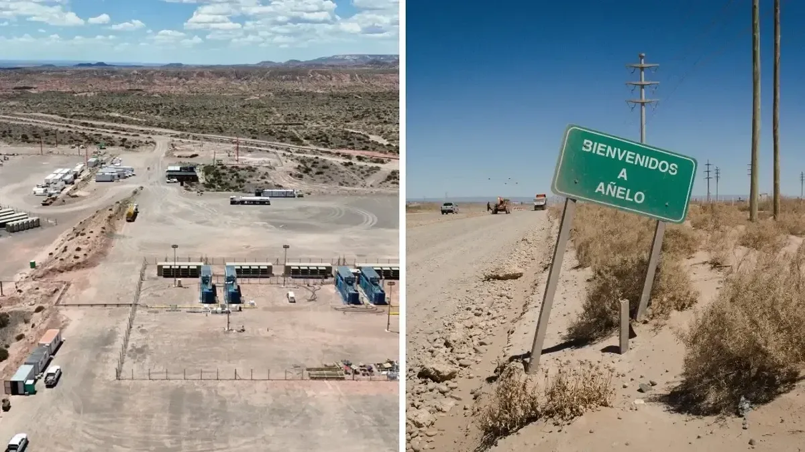

DATA CENTERS IN PATAGONIA: EMPTY ANNOUNCEMENT OR REALITY?
Stargate, OpenAI's US$25-billion data center, was announced fifteen days before the elections and still doesn't exist on paper. But the "Super RIGI" —the law that would make it possible— already has half-sanction. Behind the promise: a thirst for water and energy equal to that of an entire city, over a region the fracking boom already pushed to the brink.

Neuquén, Patagonia — June 29, 2026
On October 10, 2025, fifteen days before the midterm elections, Javier Milei's government trumpeted what it billed as the largest technology investment in Argentine history: OpenAI, the maker of ChatGPT, and the local firm Sur Energy had signed a letter of intent to build a mega AI data center in Patagonia. They named it "Stargate Argentina."
The numbers were the kind that change a conversation: up to US$25 billion in investment and a capacity of 500 megawatts (MW). For scale, Latin America's largest data center, in São Paulo, runs at 61 MW; and the 45 data centers operating across the country today do not, combined, reach that figure. OpenAI CEO Sam Altman put out a video: "We are proud to announce plans to launch Stargate Argentina." The project would enter the RIGI, the 30-year tax-incentive regime Milei launched in 2024.
Eight months on, that announcement is still just that: an announcement. It was never formally filed, has no definitive location, and no confirmed timeline or figures. The Economy Ministry itself acknowledged there is nothing backing the declaration of intent. Darío Clemente, a researcher at CONICET and at the RIGI Observatory of the FARN foundation, sums it up bluntly: of the 17 approved projects and 23 under review in the regime, none is Stargate. "There is no reliable updated information beyond that electoral announcement," he says. The most optimistic versions speak of breaking ground only in 2027.
What did move forward: the "Super RIGI" already has half-sanction
Even though the data center never materialized, the announcement served its political purpose: it shifted the scale of the debate and opened the door to a new legal framework. In the early hours of Wednesday, June 24, 2026 —just days ago— the Chamber of Deputies granted half-sanction to the "Super RIGI" by 130 votes in favor, 106 against and 7 abstentions. The bill now awaits the Senate to become law.
The regime takes direct aim at the "industries of the future": artificial intelligence, data centers, lithium batteries, solar panels, wind turbines and the uranium value chain. And it offers exceptional benefits: a 15% income-tax rate, tax, customs and foreign-exchange stability for 30 years, import exemptions, accelerated depreciation, lower payroll contributions, and free availability of foreign currency reaching 100% from the third year. It also scraps the obligation to hire local suppliers that the original RIGI set at 20%, and lets companies sue the country before ICSID if the State changes the rules.
Lawyer Pablo Cerdan was blunt: "It's the data-center law. Subsidized energy and labor for big tech firms that bill more than Argentina's GDP and will pay less tax than a small business in the suburbs."
Why Patagonia?
The choice is no accident. The investigation by the Pulitzer Center, in partnership with Chequeado, identifies four reasons: available land, cheap energy, access to water, and low temperatures that cut cooling costs. In November 2025, the Neuquén government unveiled a tech "micro-region" stretching from the Vaca Muerta area —Añelo and Tratayén— to the Limay River, in the town of Arroyito, near the El Chocón dam. Rubén Etcheverry, of Neuquén's Planning Council, sells it as an "ideal microclimate for technology industries."
Supply is already lined up: Sur Energy has signed deals with Genneia —the country's largest renewable generator— and Central Puerto. The company, founded by Emiliano Kargieman (also CEO of Satellogic, the nanosatellite firm listed on Wall Street) and the late Mat Travizano, would develop the infrastructure, while OpenAI commits to buying all the computing power without putting a single dollar into construction.
The digital thirst: what the announcement leaves out
Behind the shine of computing lies an enormous physical footprint. According to estimates used for the United States, a data center needs 7.1 m³ of water per MWh consumed —counting direct use and indirect use in power generation— equal to more than 2.5 million liters per year for every megawatt of capacity. Applied to Stargate: a 500 MW facility consumes water and electricity equivalent to a mid-sized city. Globally, data centers already take 1.5% of the planet's electricity (about 415 TWh in 2024), and demand is set to double by 2030.
| Water per MWh consumed | 7.1 m³ |
| Water per year for each MW | +2.5 million liters |
| Consumption of a 500 MW facility | ≈ a mid-sized city |
| Data centers worldwide (2024) | 1.5% of global electricity |
The problem is where that thirst would land. In the Vaca Muerta region —where each fracking well can use up to 60,000 m³ of water a year and by 2025 there were already 17,300 wells, more than 1.038 billion m³ in total— water is under strain. The area logs some 56 environmental incidents a day; the latest spill, at Lake Mari Menuco, affected 50,000 m². To a region already squeezed by oil, a new thirst would now be added: the digital one.
Unblock: the enclave that already exists
There is no need to imagine the future. Between Rincón de los Sauces and Añelo, Unblock already operates —a 27 MW data center planning to double its capacity… and employing some 20 people. It is the perfect snapshot of what specialists call "enclave economies": lots of energy, lots of investment, almost no permanent jobs. Its CEO, Tomás Ocampo, puts it bluntly: "The future of AI will be conditioned by the cost of energy."

And OpenAI is not the only one looking south. As Infobae revealed, Elon Musk's Tesla is also weighing a data center in the country alongside YPF Luz; and the government has already received executives from Google, Meta and Apple. Patagonia has suddenly become the world's energy aisle.
The sacrifice zone
While governments celebrate, communities watch with concern. Liliana Romero, lonko of the Mapuche community Fvta Trayén, in Añelo, sums up the mood: "We no longer have the same peace. There's a lot of pollution here." The werkén Diego Rosales goes further, describing the dependence the industry already imposes: "We depend on asking the industry for water." And Lefxaru Nawel, a Mapuche spokesman in Neuquén, denounces the method: communities learn of the projects "once they're already on the territory, once the works are tendered, illegally authorized, with no consultation."
Researcher Irina Sternik calls them "digital sacrifice zones": socially excluded territories where infrastructure of enormous environmental cost is dumped, with no politically powerful actors to stop it. For Alan Rocha, of the Southern Oil Observatory, the RIGI is precisely a framework that is "regressive in terms of environmental control."
The void every neighbor has already filled
The most alarming fact is regulatory: Argentina has no specific rules —commercial, tax or environmental— for this kind of infrastructure. The only framework is the RIGI, which grants benefits and priority access to resources but sets no counterweights. Neuquén's own Environment Secretariat admits it: "For now, there are no specific regulations."
The contrast with the region is striking. Brazil enacted its Redata regime in 2025, combining incentives with sustainability requirements: 100% clean energy, water efficiency and research commitments. Chile has a National Data Center Plan 2024-2030 geared toward renewables and territorial integration. In the Latin American ranking by number of data centers, Argentina is fourth, behind Brazil, Chile and Mexico: the neighbors already regulate; here there is still nothing to regulate with.
And the economic promise, so far, fails to appear even for the local private sector. Fernando Zurita, head of the Federation of Business Entities of Neuquén, says it without partisanship: "There has been no real, tangible economic impact yet." Abroad, the warning signs multiply: in the United States, Erin Brockovich launched a platform to map data centers and Bernie Sanders called for a "pause"; in Paraguay, the town of Villarrica has spent years fighting a crypto-mining farm that consumed in six months what 47,464 families would use in a year.
The question that remains
As Bea Busaniche, of the Vía Libre Foundation, puts it, the dilemma is not data center yes or no, but data center how and for whom. Any country that wants to develop technology needs computing capacity. The question is whether that capacity is built with regulation, community consultation and shared benefits, or installed as a new extractive enclave, with Patagonia's water and energy as the bargaining chip for the still-uncertain promise of digital progress.
For now there is an announcement that never materialized and a law one step from the Senate. The mirage of data still shimmers on the Patagonian horizon. It remains to be seen whether, when it arrives, it will bring water —or only more thirst.